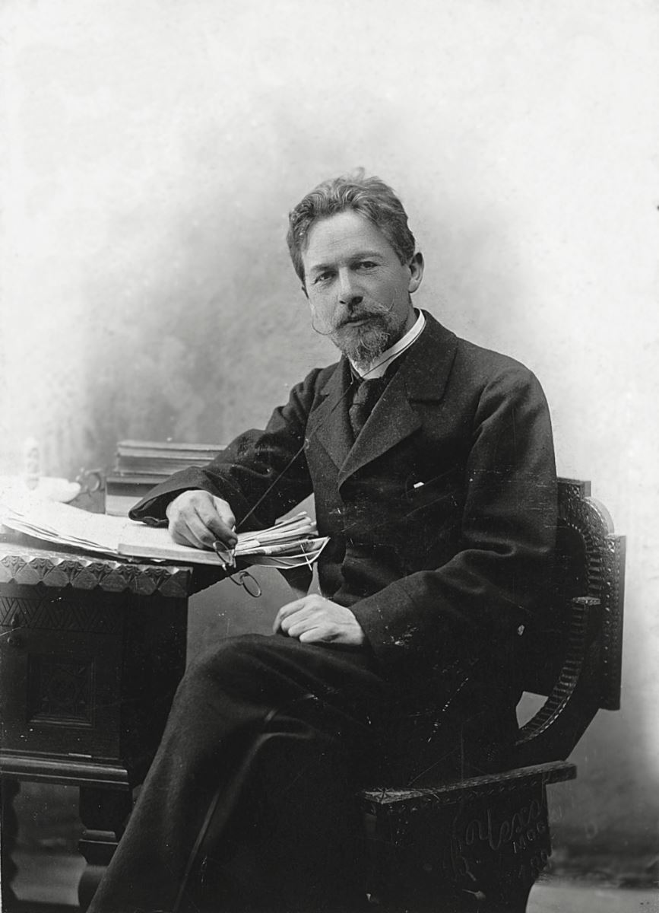
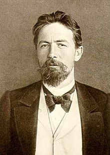

Anton Chekhov [1860-1904]

.Ngày nay đâu đâu người ta cũng biết nhà hát nghệ thuật Moskva ra đời năm 1750 là nhà hát của Anton Chekhov [1860-1904]. Tấm màn sân khấu đường bệ của nhà hát mang hình một con chim hải âu, tên một vở kịch nổi tiếng của ông, và cũng chính tại nhà hát này, nhiều lần người ta đã làm lễ kỷ niệm ngày sinh của nhà viết kịch vĩ đại.
Anton Pavlovich Chekhov mà tính cách rất đa dạng như Maxim Gorky, học trò và người hâm mộ ông đã mô tả, A.P.Chekhov lúc thì có thể nói chuyện nhiệt tình, nghiêm trang và chân thành, nhưng chỉ một lát sau, ông lại có thể tự cười nhạo mình. Nhưng bên dưới tiếng cười đó, là sự hoài nghi ý nhị của một con người biết giá trị của ngôn từ và những niềm mơ ước.
Chekhov rất sành về nghệ thuật phơi bày cái tầm thường, là vị quan tòa nghiêm khắc và tàn nhẫn của sự tầm thường đó. Nhưng như Gorky đánh giá: “Qua tất cả các câu chuyện hóm hỉnh của Chekhov…, tôi nghe thấy tiếng thở dài thất vọng thương xót cho những con người không có khả năng giữ được lòng tự trọng. Trước đó, chưa từng có nhà văn nào có thể phơi bày cho con người thấy được một bức tranh chính xác một cách tàn nhẫn như vậy về tất cả những điều đáng hổ thẹn và đáng thương”.
Ông cảm nhận sâu sắc về cuộc sống dưới thời Nga hoàng và dùng ngòi bút của mình chống lại nó, nhưng ông còn mang những niềm hy vọng lớn đối với tương lai của nước Nga. Không gì có thể xác nhận điều đó hơn là kết luận của nhân vật Olga trong vở Ba chị em: “Thời gian sẽ trôi qua và chúng ta sẽ vĩnh viễn mất đi…, nhưng những sự chịu đựng của chúng ta sẽ trở thành niềm vui cho lớp người đến sau… Và họ sẽ nhớ tới những người đang sống và sẽ phù hộ cho chúng ta”. Tuy không phải là người mácxít nhưng ông đã nhìn thấy tấn bi kịch của nước Nga Sa hoàng và như một nhà tiên tri, ông đã thấy trước sự đổi thay.
Khán giả Moskva không coi Ba chị em (trong những ngày này còn được trình diễn tại Nhà hát nghệ thuật Moskva) là một bi kịch. Trong lời nói của Olga, họ thấy niềm hân hoan hơn là nỗi thất vọng chua cay theo nhiều nghĩa khác nhau những lời tiên tri của Chekhov đã trở thành hiện thực.
Chekhov đã từng nói với nhà văn Gorki: “Ôi nước Nga, một đất nước thật phi lý và vụng dại làm sao!”. Ông than tiếc về sự thiếu vắng của lòng chính trực trong cuộc sống hàng ngày và nói với những người bạn của mình: “Ở nước Nga, những người chính trực cũng giống như cái chổi quét ống khói dùng để dọa trẻ con”. Chính là điều này và cái bi kịch trong những điều nhỏ nhặt đã thôi thúc ông viết về những bệnh hoạn của các gia đình yên ấm, đáng kính và về sự tẻ nhạt, tầm thường của cuộc sống tỉnh lẻ, nói tóm lại về cái bi kịch của những cuộc đời dung tục.
Có lần ông đã viết: “Không có gì ảm đạm và phàm tục hơn cuộc đấu tranh tầm thường để tồn tại, nó tàn phá niềm vui sống và gây nên sự thờ ơ”. Không ai có thể hiểu biết về sự lãnh đạm và cuộc đấu tranh tầm thường đó nhiều hơn Chekhov, một người đã lớn lên trong sự nghèo khổ với một người cha quá nghiêm khắc thường đánh đập con. Năm 16 tuổi, Chekhov đã quen với cảnh nghèo túng và hiểu rõ là ông phải tự kiếm sống.
Ông và người bạn còn nghèo khổ hơn Issac Srouley cùng đi dạy học và được trả ba rúp một tháng. Mọi việc rất tồi tệ nhưng Chekhov không bao giờ than vãn. Trong bức thư khuyến khích người em ruột của mình là Michel, Chekhov viết: “Vì sao em tự coi mình là kẻ hèn mọn không đáng để ý?... Giữa mọi người, em phải ý thức được nhân phẩm của mình. Em là một người trung thực, có phải không nào? Vậy thì em hãy biết tôn trọng con người trung thực dù là nhỏ bé trong em. Đừng bao giờ cho rằng con người nhỏ bé trung thực là hèn mọn”.
Ý nhị nhưng buồn rầu, tốt bụng nhưng lạnh lùng, vị kỷ nhưng nhạy cảm với nỗi khổ đau của con người, Chekhov cống hiến đời mình cho y học và văn học, làm say mê lòng người nhưng lòng mình thì buồn chán.
Chekhov nói: “Trong thế giới này, sự lạnh lùng là không thể thiếu. Chỉ có những kẻ lạnh lùng mới có thể nhìn nhận sự việc một cách tỏ tường, mới có thể cư xử đúng và hành động. Ở tôi, ngọn lửa cháy đều đều và biếng nhác, thiếu một ngọn lửa nồng đượm, bởi thế tôi không thể phạm một điều dại dột tai tiếng nào, cũng không thể hành động được một cách thông minh đặc biệt. Tôi thiếu xúc cảm mãnh liệt”. Ông thường nhắc lại những lời này trong suốt cuộc đời viết văn của mình.
Những con người bình thường và trí thức là hai tầng lớp trọng tâm trong tác phẩm của Chekhov. Ở đây, chủ đề về sự lãnh đạm được thể hiện theo hai cách: Hoặc nhân vật là một người có giáo dục mãn nguyện về tinh thần, rút vào vỏ ốc của mình, hoặc là một người tầm thường, đần độn và bàng quan. Luôn luôn có vực thẳm ngăn cách hai nhóm người này và điều đó cung cấp chủ đề cho nhiều tác phẩm của ông.
Chekhov cố gắng làm thức tỉnh tâm hồn con người, kéo anh ta ra khỏi vỏ ốc cá nhân. Ông viết: “Con người sẽ trở nên tốt đẹp hơn khi bạn chỉ cho anh ta thấy thực anh ta là người như thế nào”. Bởi vì ông tin rằng một con người trong vỏ ốc cá nhân (dù đó là vỏ thỏa mãn về tinh thần hay là vỏ lãnh đạm vô tri vô giác) sẽ trở nên nhẫn tâm và rập khuôn máy móc.
Chekhov có ảnh hưởng lớn đối với nền văn học Nga và thế giới, với tư cách vừa là nhà văn, vừa là nhà viết kịch. Có một thời, giới kịch trên thế giới coi ông vừa là một nhà văn châm biếm vừa là nhà văn có phong cách trữ tình. Hiện nay, ông được xem là nhà văn và nhà viết kịch có sắc thái đa dạng.
Như Tolstoi nhận xét: “Chekhov đã sáng tạo những hình thức viết văn mới mẻ, theo ý kiến tôi là hoàn toàn mới mẻ cho toàn thế giới, những hình thức viết mà tôi chưa hề gặp ở bất cứ nơi đâu”.
Anton Chekhov qua đời vì bị bệnh lao phổi tại Bedenweiler (Đức) năm 44 tuổi. Vào những giây phút cuối đời, khi thầy thuốc của Chekhov là bác sĩ Schwohrer biết rằng ông không có hy vọng qua khỏi nữa, liền rót rượu sâm banh mời ông. Chekhov cầm cốc rượu bác sĩ trao và quay người về phía vợ, ông nói: “Đã lâu rồi tôi chưa uống rượu sâm banh”. Một vài phút sau ông tắt thở.
Thi hài ông được chở đến Moskva bằng tàu hỏa. Bạn bè của nhà văn chờ đợi tại nhà ga Nicolas sửng sốt khi thấy thi thể của Chekhov được chở đến trong một toa tàu màu xanh, ở ngoài cửa đề chữ to: “HÀNH”. Như sau này, Gorki nói: “Đối với tôi, toa tàu màu xanh bẩn thỉu là nụ cười đắc thắng của cái dung tục trước kẻ thù đã bị quật ngã của nó”.

.Anton Pavlovitch Tchekhov [1860-1904].
Vừa qua, Nhà xuất bản Harper Collins cho ra mắt cuốn Anton Chekhov: Một cuộc đời của tác giả Donald Rayfield. Qua 674 trang sách, tác giả hé lộ nhiều chi tiết quí giá, dù nhiều trong số đó có thể gây sốc cho người đọc, nhưng những chi tiết ấy đã khắc họa một chân dung thật về Chekhov – một thiên tài đi cùng những thói tật của một con người bình thường.
Trong cách nói tiếng Nga, ít khi mọi người nhắc đến một nhân vật nổi tiếng bằng tên của họ. Khi đã trưởng thành, Anton Pavlovich Chekhov thường được gọi bằng cái tên Chekhov. Theo phép lịch sự, tất cả những ai gặp ông, dù là người xa lạ, bạn thân thậm chí cả những người tình, đều gọi ông là Anton Pavlovich. Gia đình ông và một đôi người thân, gần gũi hơn, thường gọi ông là Antonsha. Ngay cả đến hai anh em của Chekhov trong hồi ký của mình nói chung vẫn gọi ông là Anton Pavlovich.
Còn trong quyển tiểu thuyết lần này, Rayfield lại gọi Chekhov bằng cái tên Anton, cách gọi mà chỉ đôi khi Liza Mizinova, Olga Knipper dùng, bởi vì họ là những người Chekhov thật sự cho phép gần gũi ông hơn cả. Có lẽ có hai cách giải thích cho sự lựa chọn của Rayfield. Bằng quá trình tham khảo khoảng 12.000 văn bản từ tài liệu lưu trữ của Chekhov và gia đình ông, nhiều trong số đó chưa từng xuất bản, Rayfield có thể tự tin cảm thấy mình như một người thân trong gia đình Chekhov. Thứ hai, ngòi bút của tác giả thể hiện Chekhov như một người hơn là một thiên tài văn học.
Đập vào mắt người đọc là một chân dung đầy thuyết phục về một con người bị cuốn hút bởi tình dục – bừa bãi, bay bướm, thường nôn nóng và dễ cáu giận, đôi khi lạnh lùng. Trong 25 năm kể từ lúc trưởng thành, Chekhov đã có mối quan hệ với hơn 30 phụ nữ (chưa kể đến nhiều lần gặp gỡ những cô gái mại dâm), trao đổi nhiều thư từ với họ và với bạn bè. Số lượng thư từ của Chekhov lên đến 15 quyển trong bộ tuyển tập của ông. Suốt cuộc đời, Chekhov phải đối đầu với bệnh tật, nhất là trong mười năm cuối đời; giúp đỡ gia đình không chỉ về tài chính mà còn sắp xếp cuộc sống cho họ; không chỉ làm bác sĩ, mà còn là nhân viên chống bệnh dịch tả, viên chức điều tra dân số, thanh tra trường học, người tổ chức cứu nạn đói, người thành lập ít nhất ba trường học, người ủng hộ không mệt mỏi những tổ chức từ thiện. Tất cả những điều này diễn ra cùng thời gian ông sáng tác những thiên truyện và kịch thuộc hàng đẹp nhất trong văn học Nga.
Rayfield vẽ nên một bức tranh ảm đạm về gia đình Chekhov. Cha ông, Pavel một người cứng rắn, ra vẻ mộ đạo - đánh con không thương tiếc và về cuối đời luôn than vãn về những chuyện không đâu. Ngay từ tuổi 20, Anton Chekhov đã trở thành đầu tàu của gia đình khi những tính toán sai lầm của người cha đã đẩy nhà vào cảnh nghèo túng. Ông không những phải cóp nhặt từng đồng tiền (điều đã đưa ông đến với văn học bằng cách viết cho các tờ báo) mà còn phải hòa giải những cuộc cãi nhau giữa cha mẹ và anh em ruột của ông - một nét điển hình trong cuộc sống gia đình Chekhov. Mẹ ông là một người mộ đạo và tầm thường. Bà hầu như không bao giờ đọc một vở kịch hay truyện ngắn nào của Chekhov vì cho rằng chúng không đứng đắn, và ngay cả khi Chekhov ốm nặng bà cũng không thể tìm cho đứa con những món ăn cậu bé cần. Anh em của ông, nghiện rượu và chểnh mảng, luôn đòi ông tiền. Chỉ duy nhất người chị Masha thật sự gắn bó với ông. Chính Masha đã làm thay cho Chekhov những công việc liên quan đến gia đình: Cô làm việc nhà, lo việc mua, sửa sang và rồi cuối cùng bán căn nhà tại Melikhovo. Cô cũng giúp đỡ Chekhov trong việc viết văn, bảo quản tài liệu, sắp xếp và chép tác phẩm của ông để đưa xuất bản. Đổi lại, Masha bị cấm đi dạy, thiếu sự cảm thông, và kiên quyết không lấy chồng dù cô nhận được nhiều lời cầu hôn. Trong tác phẩm của Chekhov, gia đình có ảnh hưởng rất lớn và hôn nhân là không thích hợp, thậm chí là một pháo đài độc hại. Trong cuộc đời thật, Chekhov sống đến cuối đời trong một ngôi nhà bừa bộn cùng cha mẹ và chị, tiếp đãi rất nhiều khách khứa – nguyên mẫu của hình tượng gia đình trong những vở kịch của ông.
Tác phẩm của Rayfield tập trung rất nhiều vào những tư liệu cho đến hiện tại chưa được công bố nên có thể nói quyển sách này đủ thẩm quyền thay chỗ những nghiên cứu trước đây về Chekhov của Virginia Llewellyn-Smith (1973), Ronald Hingley (1976), Carolina de Maegd-Soep (1987). Quyển sách bắt đầu một cách chậm rãi, nhưng càng đọc, chúng ta càng bị cuốn hút vào đời văn của Chekhov và những tác động ảnh hưởng đến nghệ thuật của ông. Rayfield đề cập đến những tác phẩm cụ thể chỉ khi chúng có liên hệ đến cuộc đời của Chekhov, nhưng ngay cả những đoạn bình luận ngắn gọn của ông cũng thể hiện sự am hiểu sâu sắc toàn bộ tác phẩm của Chekhov. Và điều còn lại sau khi đọc xong quyển sách là nỗi ám ảnh về phép nhiệm mầu nào đã giúp Chekhov viết nên những trang văn giản dị và mạnh mẽ đến thế ngay cả khi cuộc sống tình cảm của ông đang gặp khủng hoảng, gia đình đang đứng bên bờ vực, và sức khỏe của ông suy sụp. Vườn anh đào được sáng tác vào thời điểm mà hẳn những người bình thường đang lo toan cho những sắp đặt cuối cùng.
Chekhov là con người mà nhiều phụ nữ và đàn ông công khai biểu lộ mối thiện cảm, đôi khi cuồng nhiệt. Bạn bè và cả người thân thuộc của ông bao gồm nhiều nhân vật hàng đầu của văn hóa Nga thời đó: Levitan, Leskov, Grigorovich, Gorky, Bunin, Tolstoy, Tchaikovsky, Chaliapin, Stanilavsky và Nemirovich-Danchenko. Chủ bút nổi tiếng Suvorin luôn là người bạn thân nhất của ông dù cho quan điểm của họ về vấn đề Do Thái ngày càng khác biệt. Danh sách những người tình của Chekhov có lẽ vượt qua “danh sách Don Juan” của Pushkin, và ông vẫn duy trì liên lạc với họ. Hầu hết mọi người phụ nữ trong đời Chekhov đều tha thứ cho ông về sự xao nhãng và những lần phản bội. Chỉ một lần Knipper “chiến thắng” ông bằng đám cưới của họ vào năm 1901, mà vào lúc này quan hệ của ông và cô chủ yếu dựa trên niềm ước muốn được làm cha của Chekhov. Rayfield đưa ra những bằng chứng mới cho giả thuyết rằng lần sẩy thai của Knipper vào năm 1902 rất có thể là do Knipper mang thai ngoài dạ con, và vì thế hầu như chắc chắn liên quan đến đứa trẻ cô đã mang thai trong khi sống xa chồng hàng trăm dặm.
Quyển sách của Rayfield đã bóc đi lớp hào quang tại Nga và trong học thuật Xô viết dùng để hóa thánh cho Chekhov sau khi ông mất. Thay vào đó quyển sách thể hiện một Chekhov chân thật và bình thường như ông vốn thế. Nhưng mục đích cuối cùng của nét phác thảo ấy chính là để thuyết phục chúng ta về sự chân thực trong tình cảm của Chekhov – một sự chân thực khiến những tác phẩm siêu thực nhất của ông cũng mang bộ xương của chủ nghĩa hiện thực.
TRẦN LÊ QUỲNH